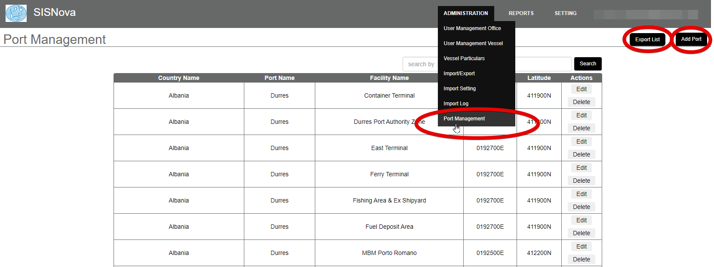
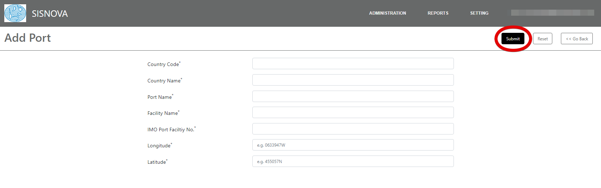

Add port functionality is provided when a vessel navigates to a new port or port facility which is not enlisted in the database.
A user can add this port and
its details by clicking on “Add Port”.
After adding the port, the file is exported to the vessel on email by clicking “Export List”. After importing the file on vessel, it will by default add these ports to their software.

To add port, click on “Add Port” and fill in the desired details. Click on “Submit” to save the data.

a)
Country Code*: It refer to a short alphabetic or numeric
geographical code developed to represent countries and dependent areas where the
vessel is intended to navigate.
b)
Country Name*: It refers to the name of country where the vessel is
intended to navigate.
c)
Port Name*: It refers to the name of a port in the above country
mentioned.
d)
Facility Name*: It refers to the facility name of the above country
mentioned where the vessel is supposed to alongside
berth.
e)
IMO Port Facility No.*: It refers to a unique alphanumeric code
given by International Maritime Organization (IMO) to a port facility.
f)
Longitude*: Longitude is a measurement
of location east or west of the prime meridian at Greenwich, London, England.
Longitude is measured 180° both east and west of the prime meridian.
g)
Latitude*: Latitude is a measurement on
a globe or map of location north or south of the Equator.